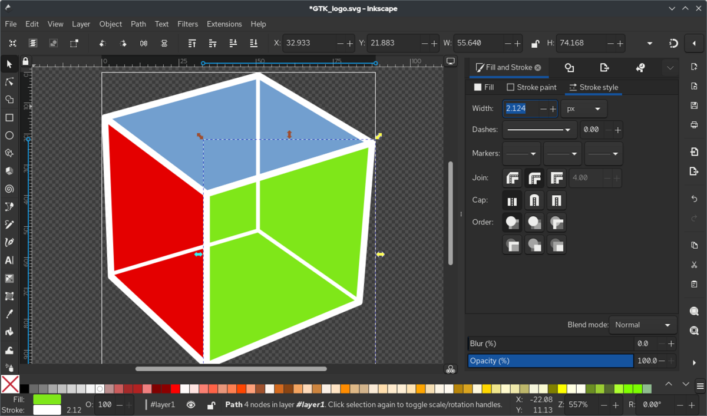
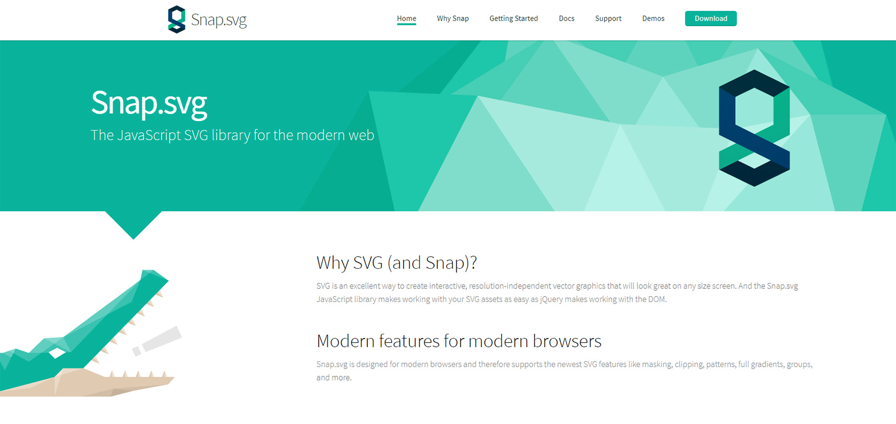

SVG: What is an SVG and when was it created?
Anyone using the web may have often come across something
known as an SVG. So what exactly is an SVG? Unlike a PNG or
JPEG image that uses pixels, an SVG, also known as Scalable
Vector Graphics, is a file format and technology used for
creating and displaying vector-based graphics on the web by
the use of mathematical formulas that define shapes, lines,
colors and text. This type of technology allows for
scalability which means an SVG can be resized without losing
its quality making it ideal for responsive design.
The World Wide Web Consortium (W3C) SVG Working Group
developed the SVG in 1998, chaired by Chris Lilley, along
with 6 competing vector graphicssubmissions that year,
including graphics from Adobe, Hewlett-Packard, and WebCGM.
Its initial release was the SVG 1.0 as a recommendation on
September 4,2001, then in 2003 the W3C launched SVG 1.1 and
SVG Mobile but because of the lack of support, early
adoption was limited. It wasn't until 2011 that allmajor
desktop browsers began to support SVG and that year the W3C
published SVG 1.1 Second Edition. Today, SVG's are used by
web developers and webdesigners on a global scale.
Why use an SVG?
- Small File Size
- Numerous Editing and Animating Opportunities:
- Integration with HTML, XHTML and CSS
A raster graphics file (PNG, JPEG, etc.) is defined by the number of pixels that it consists of, thus, the higher the number of pixels the heavier it gets in size increasing the time it will take to load a page, however, this is not the case for an SGV icon that is defined by its colors, shapes, gradients, etc. The longer it takes to load a webpage the less likely a user will stay on that page, recommend it to other users, or return in the future.
Unlike a pixelated image, a vector image can be edited in a special vector editing program, directly in a text editor, or styled in CSS. SVG's can also be used for animation purposes using simple animation programs such as, SMIL (Synchronized Multimedia Integration Language) the native SVG animation specification, Web Animations API (Application Programming Interface) a native JavaScript API that allows developers to create a more complex sequential animation without having to load an external script, WebGL, or CSS Animation which is used to avoid overloading services with big libraries for animating icons and loaders and because it can be styled in CSS without needing Javascript or external libraries, the files are much smaller and much faster to load.
SVG was created and designed to work easily with the main building blocks of websites, HTML, CSS and JavaScript. This makes it more powerful and flexible than other images . An SVG can be inserted directly into an HTML document like any other content, text, buttons, etc. With CSS, an SVG can be styled using color, width, position or any other properties used to style HTML content. Animating an SVG with CSS is similar to how a developer would use CSS to create a functional button.

Common Use Cases
Because of their scalability and sharpness on any context and size, SVG files are usually ideal for responsive design and graphics that appear in multiple locations throughout the website. Please find below some examples of the most common use cases of SVG images.
- Icons
- Buttons
- Navigation Menu
- Favicons
- Logos
- Infographics
- Illustrations and Artwork
Icons are one of the most used forms of SVG files. Examples:
The icons can be created as needed through programs such as Illustrator or can be accessed via online resources. For example, websites such as iconmonstr and SVG Repo are excellent online resources for various SVG vectors and icons.
Logos are also a largely used examples of SVG images. Logos in SVG vectors allow for a dynamic behavior and interactivity to the website. Examples of the popular commercial logos are as follows:
Infographics another great example of using SVG. Besides the interactivity, SVG as charts and graphs allows us to precisely control over the layout of the data.


Usually SVGs are used for simpler images like icons rather than those with more details, in which case png or webp are more commonly used. However, SVGs are also used for illustrations and more complex artwork due to its vector-based characteristic. They provide flexibility without losing its resolution or basically its quality.


Basic SVG Features
- Basic Shapes
-
rect, circle, ellipse, line, polyline, polygon - Fill
fill-opacity: 0 to 1 | 0 to 100%-
fill-rule: "non-zero" | "evenodd"-
fill-rulesets the color of the part where the shapes overlap.
-
- Stroke
stroke-widthstroke-opacity-
stroke-linecap: "butt" | "round" | "square"- Linecap defines how the end of the stroke is, for example, rounded or angled.
-
stroke-linejoin: "miter" | "bevel" | "round"- The line-join property sets how the meeting point of the strokes look.
- Gradient
linearGradientradialGradient- Transform
translate(x y)rotate(degree)scale(x y)-
skewX(degree)skewY(degree)
With SVG we can create basic shapes, and each has their own attributes to define. For example, their dimensions or radius if it's a circle.
The path element is used to create more
complex shapes using lines and curves. This element is
often found in SVG files obtained from online sources.
The d attribute is used to define the path.
<svg xmlns="http://www.w3.org/2000/svg">
<rect width="100%" height="100%" fill="blue" />
<circle cx="50%" cy="50%" r="50" fill="yellow" />
</svg>

<svg xmlns="http://www.w3.org/2000/svg">
<path d="M 10,30
A 20,20 0,0,1 50,30
A 20,20 0,0,1 90,30
Q 90,60 50,90
Q 10,60 10,30 z" />
</svg>

Fill sets the color of the inside of the
shapes. Within the fill element, we can use
more specific attributes:
<svg xmlns="http://www.w3.org/2000/svg">
<polygon fill="green" fill-opacity="0.5" fill-rule="evenodd"
points="50,0 21,90 98,35 2,35 79,90" />
</svg>

While fill affects the color of the inside, stroke sets the color of the border of the shapes. Stroke also has multiple attributes such as stroke-width, opacity, linecap and linejoin.


Two types of gradient are used to create color
gradations in SVG; linear or radial. They each use
different attributes. For example, linearGradient uses
x1, x2, y1, y2 while radialGradient uses cx, cy, fx, fy,
and r and both include offset and stop-color. The
attributes are defined within the
linearGradient tag element, which is nested
within the defs element.
<svg viewBox="-20 30 300 50" xmlns="http://www.w3.org/2000/svg">
<defs>
<linearGradient id="linear-grad" x1="0" x2="50%" y1="50%"y2="0">
<stop offset="0%" stop-color="blue" />
<stop offset="100%" stop-color="green" />
</linearGradient>
<radialGradient id="radial-grad" cx="50%" cy="50%" r="50%">
<stop offset="0%" stop-color="blue" />
<stop offset="100%" stop-color="green" />
</radialGradient>
</defs>
<circle cx="0" cy="50" r="20" fill="url(#linear-grad)" />
<circle cx="50" cy="50" r="20" fill="url(#radial-grad)" />
</svg>

Another basic feature of SVG is transform, which is similar to the transform property in CSS. It applies transformation to elements nested in the svg element, and multiple transformations can be added at the same time. Some examples of transform are listed below.
<svg height="300" width="500" xmlns="http://www.w3.org/2000/svg">
<rect height="100" width="200" y="70" />
<rect height="100" width="200" transform="translate(400 10) scale(1.2 0.8) rotate(90) skewX(30)" />
</svg>

Advanced SVG Features
SVG Filters
- SVG filters are used to add special effects to SVG graphics.
- All SVG filters are defined within a <defs> element. The <defs> element is short for "definitions", and contains definition of special elements (such as filters).
- The <filter> element is used to define an SVG filter. The <filter> element has a required id attribute which identifies the filter.
SVG Animation
- SVG elements can be animated.
-
Four animation elements which sets or animates SVG
graphics:
- <set>
- <animate>
- <animateTransform>
- <animateMotion>
SVG Text
- Using text directly inside our SVG has lots of benefits: it can be textured, masked—and is fully accessible.
- Inside our SVG graphic we can add a <text> element
Patterns
- Patterns can be defined in SVG using the <pattern> element. Patterns can be applied to anything that accepts a fill.
Interactivity with SVG
SVG (Scalable Vector Graphics) can be interactive, meaning it can respond to user input. Here are some ways to make SVG interactive:
- CSS: Excellent for hover effects, transitions, and animations triggered by pseudo-classes or classes.
- JavaScript: Adds dynamic behavior like starting animations on clicks, toggling classes, or handling custom user interactions.
- Click-triggered Animations: Set animations to trigger only on user clicks, allowing actions like scaling, morphing, or self-drawing when a clickable element is activated.
HTML Format for an SVG
Here is an example of how an SVG is structured in HTML. In this case, a simple blue circle is defined:
<!-- SVG Element of a blue circle -->
<svg xmlns="http://www.w3.org/2000/svg" viewBox="0 0 505 505">
<circle cx="252.5" cy="252.5" r="252.5" fill="#001bdb"/>
</svg>
Complex Shapes with the <path> Element
Here's an example of a heart shape created with the
<path> element:
<svg xmlns="http://www.w3.org/2000/svg" width="100" height="100">
<path d="M10,30 A20,20 0,0,1 50,30 A20,20 0,0,1 90,30 Q90,60 50,90 Q10,60 10,30 Z" fill="red"/>
</svg>
<path> element.
Using CSS for SVG Interactivity
Below is a demonstration of how you can use CSS to add interactivity to SVG elements:
.hoverCircle {
transition: fill 0.3s ease;
}
.hoverCircle:hover {
fill: #00ff00;
}
Output
Using JavaScript for SVG Interactivity
Below is a demonstration of how you can use JavaScript to add interactivity to SVG elements:
const interactiveCircle = document.querySelector("#interactiveCircle");
interactiveCircle.addEventListener("click", () => {
const currentColor = interactiveCircle.getAttribute("fill");
interactiveCircle.setAttribute("fill", currentColor === "#001bdb" ? "#db0000" : "#001bdb");
});
Output
Using CSS and JavaScript Together for SVG Interactivity
Below is a demonstration of how you can use CSS and JavaScript together to add interactivity to SVG elements:
CSS Code:
.hoverCircle {
fill: #001bdb;
transition: transform 0.3s ease, fill 0.3s ease;
}
.hoverCircle:hover {
fill: #00dbdb;
}
JavaScript Code:
const interactiveCircle = document.querySelector("#interactiveCircle");
interactiveCircle.addEventListener("click", () => {
const isScaled = interactiveCircle.getAttribute("transform");
if (isScaled) {
interactiveCircle.removeAttribute("transform");
} else {
interactiveCircle.setAttribute("transform", "scale(1.2)");
}
});
Output
Tools and Libraries
Tools
Libraries
 Pros and Cons of SVG
Pros
- Scalability: Unlike raster images that generally are constrained by a definite monitor resolution, SVG images qualify in being resolution-independent and cater to responsive web design.
- Small File Size: SVG files are ideal due to their smaller size relative to raster graphics (JPEG or PNG). This reduces states of loading time.
- Print Quality: SVG's quality remains intact while printing unlike raster images that can sometimes become pixelated.
- Accessibility: SVG files support multimedia elements such as metadata which can be beneficial for accessibility and SEO purposes.
- Interactivity: Hover effects and click events can be embedded in SVG to create interactive graphics and charts.
- Manipulability: SVGs are XML-based and they can be manipulated using CSS and JavaScript. This provides room for dynamic effects, animations, and easy styling.
Below is an example comparing raster and vector image quality when zoomed in. Notice how the vector (SVG) retains its sharpness while the raster image becomes pixelated.
Cons
- Complicated for highly detailed images: SVG doesn't scale well to these intricacies for the compression ratios, resulting in larger file sizes. Therefore, raster formats are better suited for these types of images.
- Browser Compatibility: Most current browsers can render SVG without trouble, but older versions may require fallback measures to fully support this feature.
- Performance Issues: SVGs can lead to performance issues, especially during rendering on low-powered devices when overused or used for complex graphics.
- Limited Color Depth: SVGs are not suitable for images requiring a wide range of colors or gradients, as they are primarily designed for simpler graphics.